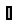

| Name | Description |
|---|---|
| FixedLines | Visualizing a set of lines as cylinders (e.g., used to display characters) |
| Lines | Visualizing a set of lines as cylinders with variable size, e.g., used to display characters (no Frame connector) |
With model Lines a set of dynamic lines is defined
that are located relatively to frame_a. Every line
is represented by a cylinder. This allows, e.g., to define simple shaped
3-dimensional characters. Note, if the lines are fixed relatively to frame_a,
it is more convenient to use model Visualizers.FixedLines.
An example for dynamic lines is shown in the following figure:

The two letters "x" and "y" are constructed with 4 lines
by providing the following data for input variable lines
lines = {[0, 0; 1, 1],[0, 1; 1, 0],[1.5, -0.5; 2.5, 1],[1.5, 1; 2, 0.25]}
Via vectors n_x and n_y a two-dimensional coordinate system is defined. The points defined with variable lines are with respect to this coordinate system. For example "[0, 0; 1, 1]" defines a line that starts at {0,0} and ends at {1,1}. The diameter and color of all line cylinders are identical and are defined by parameters.
The following variables are declared as input Real. If the default equation is not appropriate, a corresponding modifier equation has to be provided in the model where a Lines instance is used, e.g., in the form
Visualizers.Lines lines(n_x = {0,1,0});
| Declaration | Meaning |
|---|---|
| Real[3,3] T = identity(3) | Transformation matrix from object to world frame (r_world = T*r_object) |
| Real[3] r = {0,0,0} | Position vector from origin of world frame to origin of object frame, resolved in world frame |
| Real[3] r_lines = {0,0,0} | Position vector from origin of object frame to the origin of 'lines' frame, resolved in object frame |
| Real[3] n_x = {1,0,0} | Vector in direction of x-axis of 'lines' frame, resolved in object frame |
| Real[3] n_y = {0,1,0} | Vector in direction of y-axis of 'lines' frame, resolved in object frame |
| Real[:, 2, 2] lines | List of start and end points of cylinders resolved in an x-y frame, defined by n_x, n_y, e.g., {[0,0;1,1], [0,1;1,0], [2,0; 3,1]} |
| Real diameter = 0.05 | Diameter of the cylinders defined by 'lines' |
| Integer[3] color = {255,0,0} (red) | Color (see below) |
| Real specularCoefficient = 0 | Material property describing the reflecting of ambient light (= 0 means, that light is completely absorbed) |
Variable color is an Integer vector with 3 elements, {r, g, b}, and specifies the color of the shape. {r,g,b} are the "red", "green" and "blue" color parts. Note, r g, b are given in the range 0 .. 255. The predefined type MultiBody.Types.Color defines this Integer vector together with a menue for the colors used in the MultiBody library (the menu will be replaced by a color editor).
model Lines
"Visualizing a set of lines as cylinders with variable size, e.g., used to display characters (no Frame connector)"
import SI = Modelica.SIunits;
import Modelica.Mechanics.MultiBody;
import T = Modelica.Mechanics.MultiBody.Frames.TransformationMatrices;
input MultiBody.Frames.Orientation R = MultiBody.Frames.nullRotation()
"Orientation object to rotate the world frame into the object frame.";
input SI.Position r[ 3]={0,0,0}
"Position vector from origin of world frame to origin of object frame, resolved in world frame";
input SI.Position r_lines[ 3]={0,0,0}
"Position vector from origin of object frame to the origin of 'lines' frame, resolved in object frame";
input Real n_x[3]={1,0,0}
"Vector in direction of x-axis of 'lines' frame, resolved in object frame.";
input Real n_y[3]={0,1,0}
"Vector in direction of y-axis of 'lines' frame, resolved in object frame.";
input SI.Position lines[ :, 2, 2]=zeros(0, 2, 2)
"List of start and end points of cylinders resolved in an x-y frame defined by n_x, n_y, e.g., {[0,0;1,1], [0,1;1,0], [2,0; 3,1]}";
input SI.Length diameter( min=0) = 0.05
"Diameter of the cylinders defined by lines";
input MultiBody.Types.Color color = {0,128,255} "Color of cylinders";
input Real specularCoefficient(min=0) = 0
"Material property describing the reflecting of ambient light (= 0 means, that light is completely absorbed)";
protected
parameter Integer n=size(lines, 1) "Number of cylinders";
T.Orientation R_rel=
T.from_nxy(n_x, n_y);
T.Orientation R_lines=
T.absoluteRotation(R.T, R_rel);
Real r_abs[3]=r + T.resolve1(R.T, r_lines);
MultiBody.Visualizers.Advanced.Shape cylinders[
n](
each shapeType="cylinder",
lengthDirection={T.resolve1(R_rel, vector([lines[i, 2, :] - lines[i, 1,
:]; 0])) for i in 1:n},
length={MultiBody.Frames.length(lines[i, 2, :] - lines[i, 1, :]) for i in
1:n},
r={r_abs + T.resolve1(R_lines, vector([lines[i, 1, :]; 0])) for i in 1:
n},
each width=diameter,
each height=diameter,
each widthDirection={0,1,0},
each color=color,
each R=R,
each specularCoefficient=specularCoefficient);
end Lines;

With model FixedLines a set of lines is defined
that are located relatively to frame_a. Every line
is represented by a cylinder. This allows to define simple shaped
3-dimensional characters. An example is shown in the
following figure:
The two letters "x" and "y" are constructed with 4 lines
by providing the following data for parameter lines
lines = {[0, 0; 1, 1],[0, 1; 1, 0],[1.5, -0.5; 2.5, 1],[1.5, 1; 2, 0.25]}
Via parameter vectors n_x and n_y a two-dimensional coordinate system is defined. The points defined with parameter lines are with respect to this coordinate system. For example "[0, 0; 1, 1]" defines a line that starts at {0,0} and ends at {1,1}. The diameter and color of all line cylinders are identical and are defined by parameters.
| Name | Default | Description |
|---|---|---|
| animation | true | = true, if animation shall be enabled |
| if animation = true | ||
| scale | 1 | The 'lines' are visualized 'scale' times bigger |
| lines[:, 2, 2] | {[0, 0; 1, 1],[0, 1; 1, 0]} | List of start and end points of cylinders resolved along n_x and n_y [m] |
| diameter | 0.05 | Diameter of the cylinders defined by lines [m] |
| r_lines[3] | {0,0,0} | Position vector from origin of frame_a to the origin of the 'lines' frame, resolved in frame_a [m] |
| n_x[3] | {1,0,0} | Vector in direction of x-axis of 'lines' frame, resolved in frame_a. |
| n_y[3] | {0,1,0} | Vector in direction of y-axis of 'lines' frame, resolved in frame_a. |
| color | {0,128,255} | Color of cylinders |
model FixedLines
"Visualizing a set of lines as cylinders (e.g., used to display characters)"
import SI = Modelica.SIunits;
import Modelica.Mechanics.MultiBody;
extends MultiBody.Interfaces.PartialVisualizer;
parameter Boolean animation=true "= true, if animation shall be enabled";
parameter Real scale(min=0) = 1
"|if animation = true| The 'lines' are visualized 'scale' times bigger";
parameter SI.Position lines[ :, 2, 2]={[0, 0; 1, 1],[0, 1; 1, 0]}
"|if animation = true| List of start and end points of cylinders resolved along n_x and n_y";
parameter SI.Distance diameter( min=0) = 0.05
"|if animation = true| Diameter of the cylinders defined by lines";
parameter SI.Position r_lines[ 3]={0,0,0}
"|if animation = true| Position vector from origin of frame_a to the origin of the 'lines' frame, resolved in frame_a";
parameter Real n_x[3]={1,0,0}
"|if animation = true| Vector in direction of x-axis of 'lines' frame, resolved in frame_a.";
parameter Real n_y[3]={0,1,0}
"|if animation = true| Vector in direction of y-axis of 'lines' frame, resolved in frame_a.";
parameter MultiBody.Types.Color color = {0,128,255}
"|if animation = true| Color of cylinders";
protected
parameter Integer ndim=if world.enableAnimation and animation then 1 else
0;
Lines x_label[
ndim](
each lines=scale*lines,
each diameter=scale*diameter,
each color=color,
each r_lines=r_lines,
each n_x=n_x,
each n_y=n_y,
each r=frame_a.r_0,
each R=frame_a.R);
equation
frame_a.f = zeros(3);
frame_a.t = zeros(3);
end FixedLines;